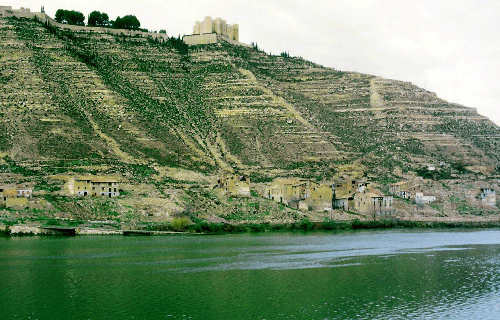

Actualidad · Bajo el embalse · España
Riaño dio el 86 % a las derechas en 1936; Mequinenza, el 89 % al Frente Popular. Así votaban los pueblos que se tragaron los pantanos
Dieciocho pueblos que votaron en febrero de 1936 y que después quedaron bajo un embalse, o desalojados para hacerlo. Había 12.014 electores. Ganaron las derechas en 12 y el Frente Popular en 5. Hoy, donde quedan, se vota de otra manera, y en algunos ya no vota nadie.
Por Nacho G. del Álamo ·

Cada párrafo lleva una etiqueta: dato (cifra comprobable con las fuentes), patrón (relación que se repite, sin afirmar la causa), hipótesis (explicación posible, sin dos fuentes independientes) o contexto (hechos y declaraciones publicados por otros, enlazados). Cómo verificamos
ContextoEs noviembre de 1984 en Riaño, en la montaña de León. Llueve y la niebla tapa la sierra al fondo de la calle. Hay coches aparcados en la acera, un Renault rojo en primer plano, y tres vecinos que caminan por el centro de la calzada. A la izquierda, el cartel del Hostal Riaño; a la derecha, el de un café y una galería de madera que se cae a pedazos. La foto es de Rafaelji, que la publicó en la Enciclopedia Libre. Es una de las últimas imágenes del pueblo.
ContextoEn julio de 1987 empezaron a derribar las casas de nueve pueblos del valle: Anciles, Salio, Huelde, Éscaro, La Puerta, Burón, Pedrosa del Rey, Riaño y Vegacerneja, según la Wikipedia. Durante el desalojo murió en su casa un vecino de Riaño, Simón Pardo, «Mones»; la misma fuente lo describe como «el suicidio de un vecino de Riaño». Hubo manifestaciones, cargas policiales y ocupación del valle. «Las compuertas del embalse de Riaño se cerraron el 31 de diciembre de 1987».
DatoMedio siglo antes, el 16 de febrero de 1936, el municipio de Riaño tenía 1.132 electores. Votó el 71%. Las derechas sacaron el 85,9% de los votos a candidatos y el Frente Popular, el 13,6%, según el Atlas Electoral de la Segunda República de la Universitat Pompeu Fabra. En Pedrosa del Rey, que era municipio propio y hoy es parte de Riaño, las derechas llegaron al 93,8%.

Seiscientas presas
ContextoEl franquismo hizo del pantano un símbolo. Erik Swyngedouw, geógrafo de la Universidad de Mánchester, lo estudió en Liquid Power, un libro sobre el agua y la modernización de España. Según la presentación del libro, el régimen «incluyó seiscientas presas, la expansión de la hidroelectricidad y el regadío masivo» (traducción propia). Unos quinientos pueblos de España están hoy bajo el agua, según el cálculo que recoge Águeda García de Durango en iAgua.
ContextoNo todos eran municipios. Muchos eran aldeas, y la mayoría eran tan pequeños que nadie publicó nunca sus resultados electorales. Pero el Atlas tiene los de 1936 de los municipios que existían entonces, también de los que ya no existen. Hemos buscado los que quedaron bajo un embalse o se vaciaron por uno, y hemos encontrado dieciocho con datos. Son pocos, y no son una muestra de nada: son los que tienen nombre en las dos listas.
DatoDe los dieciocho, las derechas ganaron en 12, el Frente Popular en 5 y el centro en uno, Portomarín. Las mayores victorias de las derechas fueron en pueblos de montaña de muy pocos electores: Lanuza, en el Pirineo de Huesca, con 119 electores y el 98,8%; Santolea, en Teruel, con el 97,8%; Pedrosa del Rey, en León, con el 93,8%, y Vegamián, también en León, con el 92,4%.
PatrónLas victorias del Frente Popular están en pueblos de valle, de minas o de jornaleros: Mequinenza, Fayón, Linares del Arroyo, Granadilla y Peñarrubia. No hay un patrón que relacione el voto de 1936 con el embalse que vino después. Los pantanos se hicieron donde había un río y un valle estrecho, no donde se votaba de una manera u otra.
Mequinenza, la de las minas
DatoMequinenza era el más grande de los dieciocho: 1.968 electores. En febrero de 1936 votó el 68%, y el Frente Popular sacó el 88,6%, el más alto de Aragón entre los municipios de más de 1.500 electores. Las derechas se quedaron en el 11,2%.
ContextoEra un pueblo de mineros y llaüters, los barqueros del Ebro. La gente «trabajaba principalmente en la extracción de lignito de las minas» y llevaba el carbón en barcas por el río, según la Wikipedia. «La construcción de la presa de Ribarroja supuso la desaparición de la mayor parte del casco urbano». Los vecinos tuvieron que «abandonar sus casas y presenciar su derribo». En 1967, «la apertura del embalse de Ribarroja anegó el pueblo de Mequinenza y el pueblo viejo de Fayón», recoge la misma enciclopedia. El escritor Jesús Moncada, nacido allí, contó aquel final en su novela Camí de sirga (1988).
DatoEn julio de 2023, Mequinenza tenía 1.720 electores, menos que en 1936. La izquierda sumó el 54,1% y la derecha, el 41,3%. El PSOE, con el 38,6%, fue el más votado. Fayón, que en 1936 tenía 807 electores y dio el 57,3% al Frente Popular, tiene hoy 273.
Talavera la Vieja, Granadilla y Peñarrubia
DatoTalavera la Vieja, en Cáceres, tenía 755 electores en 1936. Votó el 83% y dio el 67,0% a las derechas. Las aguas del embalse de Valdecañas la cubrieron en 1963.
ContextoUn decreto de diciembre de 1964 acordó «la disolución del Municipio de Talavera la Vieja». Sus vecinos «fueron realojados en diversos pueblos que creó el Instituto de la Vivienda», entre ellos Rosalejo y Tiétar, y muchos otros se fueron a Barcelona y a Madrid, según la Wikipedia. Su término es hoy de Bohonal de Ibor, donde en 2023 la derecha sumó el 54,3%.
DatoGranadilla, también en Cáceres, votó lo contrario: 477 electores, el 88% de participación y el 56,2% para el Frente Popular. El Consejo de Ministros decretó en 1955 la expropiación de casi todo su término para el embalse de Gabriel y Galán. Los últimos vecinos se fueron en 1964. El agua nunca llegó a cubrirlo: se quedó aislado en una península, y hoy se visita como pueblo restaurado, según la Wikipedia.
DatoPeñarrubia, en Málaga, tenía 1.020 electores y dio el 71,5% al Frente Popular. «A partir de 1971, fue desalojado para construir el embalse de Guadalteba», y en 1973 dejó de ser municipio: su término pasó a Campillos, según la Wikipedia. Casi todos sus 1.800 vecinos se fueron a una barriada nueva de Málaga, Santa Rosalía. Campillos dio en 2023 el 57,1% a la izquierda.
Jánovas, el pantano que no se hizo
DatoAlbella y Jánovas, en el Sobrarbe, tenía 549 electores en 1936. Votó el 51% y dio el 57,6% a las derechas y el 40,1% al Frente Popular.
ContextoA Jánovas lo vaciaron para un embalse que nunca se construyó. En febrero de 1966, un empleado de Iberduero sacó de la escuela, agarrada del pelo, a la maestra que daba clase a los once niños del pueblo, cuenta Eduardo Bayona en Público. «Te dije ayer que no volvieras a abrirla», le dijo. La escuela no volvió a abrir. La familia de Paca Castillo y Emilio Garcés resistió sola hasta 1984. El proyecto se rechazó en 2001 por su impacto ambiental.
«Nos arruinaron la vida. Con estos tiburones no hay quien salga».
Paca Castillo, vecina de Jánovas, en Salvados, citada por Público.
DatoJánovas es hoy parte de Fiscal, donde en 2023 la derecha sumó el 50,9% y la izquierda, el 45,1%. Sus antiguos vecinos han recuperado la mayor parte de las propiedades expropiadas y rehacen algunas casas.
Yesa: un balneario y un pueblo del sindicato
DatoEl embalse de Yesa, en el límite de Zaragoza y Navarra, se llevó tres municipios con datos en el Atlas. Tiermas, con 458 electores, dio el 53,0% a las derechas y el 46,2% al Frente Popular. Escó, con 164, el 68,9% a las derechas. Ruesta, con 287, el 82,9%.
ContextoTiermas tenía unos baños de aguas sulfurosas, que reaparecen «cuando el nivel de las aguas lo permite, generalmente desde el mes de septiembre en adelante», según la Wikipedia. Hoy es de Sigüés, un municipio de 66 electores. Ruesta «fue deshabitada debido a la construcción del embalse de Yesa». La Confederación Hidrográfica del Ebro cedió su uso al sindicato CGT, nacido de una escisión de la CNT (Wikipedia). El pueblo que en 1936 dio el 82,9% a las derechas es hoy un pueblo de anarcosindicalistas.
Pirineo, León y Castilla
ContextoMediano, en Huesca, quedó inundado el 29 de abril de 1969 «por las fuertes lluvias y la apertura del embalse». El campanario de su iglesia sigue asomando por encima del agua (Wikipedia). En 1936 tenía 161 electores, y las derechas ganaron por menos de un punto: 50,2% contra 49,3%.
ContextoVegamián, en León, «desapareció definitivamente el 23 de junio de 1969, bajo las aguas del embalse Juan Benet», con sus aldeas (Wikipedia). Lanuza se vació con la construcción de su embalse en 1976, y en los años noventa sus antiguos vecinos «consiguieron recuperar las propiedades no sumergidas» (Wikipedia). Santolea perdió su vega a orillas del Guadalope, y Linares del Arroyo, en Segovia, «desapareció anegada por el embalse de Linares a mediados del siglo XX» (Wikipedia; Wikipedia).
ContextoEl último de la lista no es de Franco. Tiurana, en Lleida, fue «abandonada en 1999 por motivo de la construcción del pantano de Rialb», y el pueblo nuevo se inauguró en 2007 (Wikipedia). En 1936 tenía 262 electores. En 2023, 57. Portomarín, en Lugo, se trasladó en 1962 por el embalse de Belesar; las piedras de su iglesia de San Nicolás «fueron numeradas y ensambladas de nuevo» en el pueblo nuevo (Wikipedia).
Lo que queda
DatoLos dieciocho pueblos pertenecen hoy a 16 municipios. En 7 de ellos ganó la izquierda en julio de 2023 y en los demás, la derecha. Riaño, que en 1936 dio el 85,9% a las derechas, tiene hoy 421 electores y dio a la derecha el 52,3%, con el PP en el 39,8%.
PatrónLos votos de 1936 y los de 2023 no son los mismos vecinos ni el mismo lugar. Algunos de estos municipios absorbieron a otros pueblos, y otros perdieron casi toda su población. Comparar a Ruesta en 1936 con Urriés en 2023, donde votan 42 personas, es comparar dos cosas distintas.
Lo que estos datos no dicen
ContextoLos dieciocho pueblos son los que hemos podido identificar en el Atlas con un embalse documentado; no son todos. Faltan las aldeas que no eran municipio, como casi todas las del valle de Riaño, y los municipios sin datos de 1936. El voto de un pueblo no explica por qué se hizo allí un pantano. En 1936 se votaba con listas abiertas y varios votos por elector; el peso de cada bloque es su parte de los votos a candidatos. El censo era de mayores de 23 años. Los datos de 2023 son del municipio entero al que pertenece hoy cada pueblo, no del pueblo.
ContextoEn la foto de 1984, el cartel del Hostal Riaño todavía cuelga sobre la calle. Tres años después, la calle estaba bajo el agua. En 1936 votaron allí 803 personas. Hoy, en el Riaño nuevo, en un alto sobre el embalse, votan 332.
Mira 1933 y 1936 en tu municipio, en el mapa · Más: El mapa de 1936 apenas se parece al de hoy · Los pueblos de la guerra
Método y fuentes
- Qué se compara
- Dieciocho municipios de febrero de 1936 anegados o desalojados por un embalse, en las generales del 16 de febrero de 1936 y, en el municipio al que pertenecen hoy, en las del 23 de julio de 2023.
- Límites
- Son los que hemos podido identificar en el Atlas con un embalse documentado, no todos: faltan las aldeas que no eran municipio. El voto no explica dónde se hizo un pantano. Los datos de 2023 son del municipio entero al que pertenece hoy cada pueblo. En 1933 y 1936 se votaba con listas abiertas y varios votos por elector: el peso de cada candidatura es su parte de los votos a candidatos. El censo de entonces era de mayores de 23 años; el de 2023, de 18, sin voto exterior.
- Cómo se calcula
- Porcentaje de cada bloque sobre los votos a candidatos (1936). En 2023, izquierda: PSOE, Sumar, ERC, EH Bildu y BNG; derecha: PP, Vox, Junts, PNV y CC. Cifras reproducibles con los scripts del expediente de la pieza. Metodología de Actualidad · Metodología del Atlas
- Fuentes
- Toni Rodon, Pau Vall-Prat y Diego Martín Álvarez, Electoral Atlas of the Spanish Second Republic (1931-1936), Universitat Pompeu Fabra, CORA Repositori de Dades de Recerca (CC BY-NC-SA 4.0)
- Ministerio del Interior, resultados electorales por mesa (Infoelectoral), vía pollspaindata. Sin voto exterior (CERA)
- Wikipedia, «Embalse de Riaño» (consultada el 23-10-2026)
- Wikipedia, «Pueblo Viejo de Mequinenza» (consultada el 23-10-2026)
- Wikipedia, «Talavera la Vieja» (consultada el 23-10-2026)
- Wikipedia, «Granadilla (Cáceres)» (consultada el 23-10-2026)
- Eduardo Bayona, sobre Paca Castillo y Jánovas, Público
- Águeda García de Durango, «Pueblos sumergidos», iAgua
- Erik Swyngedouw, Liquid Power (MIT Press), presentación del libro
- Autoría
- Nacho G. del Álamo
- Revisión de datos y texto
- Nacho G. del Álamo, 23 de octubre de 2026
- Publicado · actualizado
- 23 de octubre de 2026 · 23 de octubre de 2026
- Correcciones
- Ninguna.
Serie «Historia electoral»: 29 piezas
- Pozuelo, Getxo o Ávila: 1.932 municipios donde el PSOE nunca ha ganado unas generales
- Siete partidos distintos han ganado en Mont-roig del Camp: ha cambiado 11 veces de ganador en 16 generales
- En Baltar votó el 16 % en 1979; hoy vota el 79 %. La participación imposible del interior gallego
- En Arona votó uno de cada cinco electores en las europeas de 2014
- Tres partidos en 1,3 puntos: el empate a tres de Euskadi en 2023 no tiene precedentes
- El voto en blanco se multiplicó por seis entre 1977 y 2000, y desde entonces se ha reducido a la mitad
- Antes de Teruel Existe: los cinco diputados andalucistas de 1979 y el 19,7 % de Cádiz
- De 23,6 a 35,1 millones: el censo electoral ha crecido un 49 % desde 1977
- Las europeas solo superan el 60 % de participación cuando coinciden con las municipales
- El mapa de 1936 apenas se parece al de hoy: 1.545 pueblos que votaron a las derechas eligen ahora a la izquierda
- Fuente Vaqueros, el pueblo de Lorca, dio el 77,5 % al Frente Popular; Víznar, donde lo mataron, el 63 % a las derechas
- Gernika votó al PNV en 1936 y volvió a hacerlo en 2023, por 11 votos; Belchite tiene hoy menos electores que antes de su batalla
- Las mujeres votaron por primera vez en 1933 y ganaron las derechas; en 1936 volvieron a votar y 888 pueblos se pasaron al Frente Popular
- 256 pueblos han votado a la izquierda en 1936 y en las 16 generales de la democracia; 1.610, siempre a la derecha
- Cuando la CNT pidió no votar, en Alcalá de Gurrea votaron 87 de 829 electores; dos años después, 517
- Estás aquíRiaño dio el 86 % a las derechas en 1936; Mequinenza, el 89 % al Frente Popular. Así votaban los pueblos que se tragaron los pantanos
- Vallecas dio el 86 % al Frente Popular y Franco la borró del mapa: los 1.334 pueblos que votaron en 1936 y ya no existen
- Mieres votó en masa dieciséis meses después de la revolución: el 86 % fue a las urnas y el 79 % eligió al Frente Popular
- Vic dio el 69 % a la Lliga en 1933 y hoy es la gran ciudad de Junts; L'Hospitalet dio el 77 % al Front d'Esquerres de Companys y hoy vota al PSC
- Los pueblos que levantó Franco votan más a Vox que sus vecinos: en Tiétar, Rosalejo y Pueblonuevo de Miramontes pasó del 25 %
- Ver las 29 piezas de la serie
Más datos: más piezas sobre historia electoral.
Sigue leyendo
- A cuatro días del 3 de noviembreTrump mandó redibujar el mapa para conservar la Cámara; las encuestas no le acompañan
- Israel, las cuentas del 61Con todo el voto contado, Netanyahu solo llega a 61 escaños si suma a Ra'am, el partido islamista árabe
- Las llaves y la urnaDonde viven los caseros gana el PP; donde viven los inquilinos, gana la abstención
- ActualidadTodas las piezas de actualidad
- AtlasAtlas de las anomalías electorales